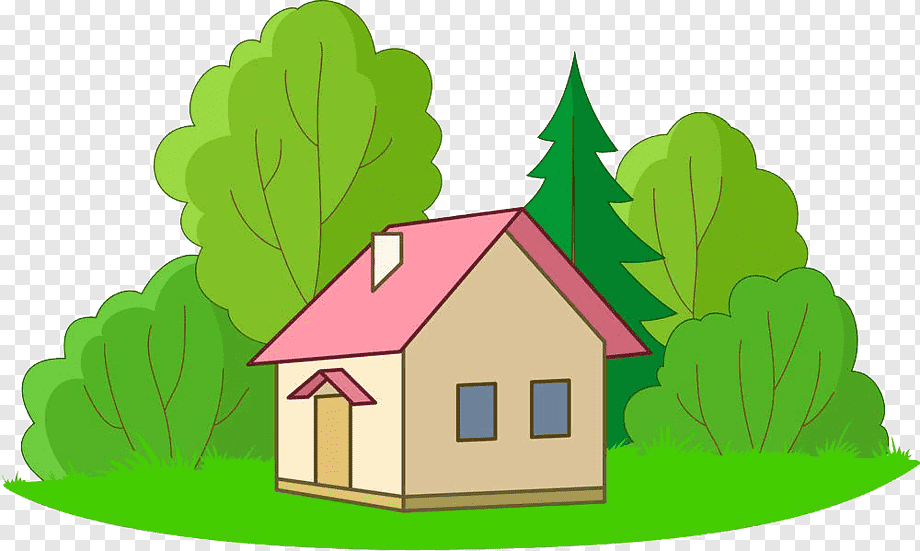
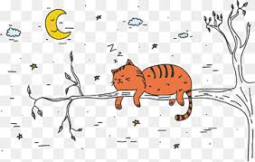
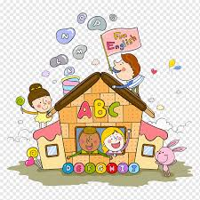

em um dia claro e alegre ceio de boas coisas para aproveitar, um menino se depara com uma indagação de seu coraçaõ ansioso e euforico: onde esta aquele velho livro de historias antigas que minha vó tinha?
indo a caminho para casa da vó, ele deve atravesar um lago, porém a ponte estava quebrada o que ele deveria fazer?

indo em direção ao sitio encontra um gato que está durmindo, o que fazer?
Ao procurar por ajuda ele encontra um madereiro que reconstroi a ponte, então continua seu caminho até a casa da vó. Quando lá chegou recebeu uma festa surpresa preparada por sua família e seu presente era o velho livro de historias.
Ao se desviar do gato corre feliz ao sitio porque escuta o som de festa. Quando lá chegou recebeu uma festa surpresa preparada por sua família e seu presente era o velho livro de historias.

FIM! espero que tenha gostado da breve e divertida hitória